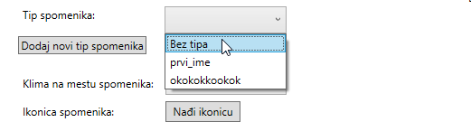
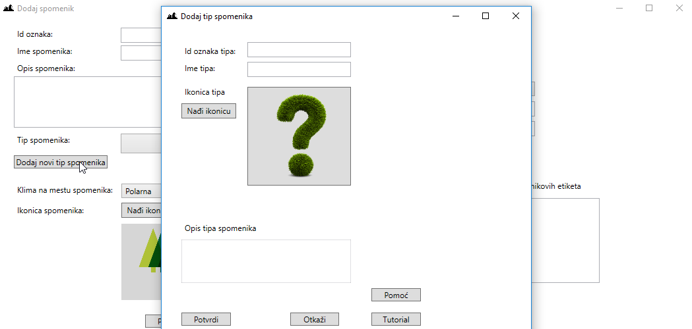
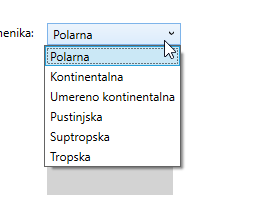
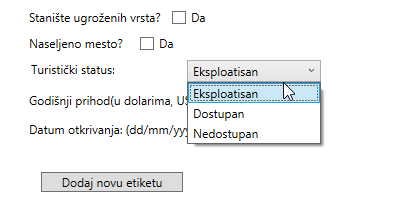
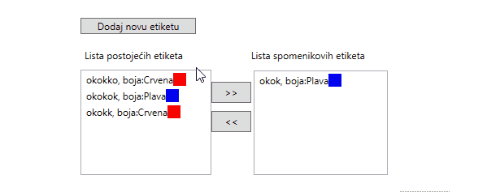

Slika: forma dodavanja ili ažuriranja spomenika
Teorijski deo o spomenicima (sa početne stranice pomoći):
Sa Wikipedije:Spomenik prirode ili prirodna baština je element prirode koji je nekim aktom države stavljen pod zaštitu kako bi se očuvale njegove izvorne prirodne vrednosti. Često su to istovremeno i nacionalni parkovi, ali može biti i jedan samostalni objekat, na primer vrlo staro stablo, ili manja površina jasno odvojena od svoje okoline, s izrazitim geološkim svojstvima.Prirodni spomenik ovde predstavlja mesto izuzetne prirodne lepote ili značaja. Može se nalaziti bilo gde na svetu i mora se slagati sa normama i zakonima koje postoje u zakonskim aktima države u kojoj se spomenik nalazi. Spomenik prirode može da bude:Neki primeri spomenika bi mogli biti: Jeloustoun u SAD, Fruška gora u Vojvodini, Đavolja varoš u okolini Kuršumlije itd.
- geološki (hidrogeološki, paleontološki, petrološka, mineraloški, strukturnogeološki i dr)
- geomorfološki
- speleološki (pećina, jama i dr)
- hidrološki (ceo ili deo vodotoka, kao slap, jezero dr.)
- botanički (retki ili značajni primerci biljnog sveta, kao pojedinačno stablo, drvoredi, parkovi, botaničke bašte i dr).
U okviru aplikacije:Svaki spomenik je opisan preko: svoje jedinstvene ljudski-čitljive oznake koju unosi korisnik, imena, opisa, tipa, klime u kojoj se nalazi, ikonice, da li je ekološki ugrožen, da li je stanište ugroženih vrsta, da li je u naseljenom regionu ili ne, turističkog statusa, godišnjeg prihoda od turizma, i datuma otkrivanja.
Više o spomenicima prirode možete naći na ovoj adresi .
Aplikativni deo rada sa spomenicima:
Pomoću ovog dijaloga možete dodati ili ažurirati spomenik popunjavanjem polja i pritiskom na dugme "Sačuvaj". Obavezna polja za unos su "Id", "Ime" i "Tip spomenika", ostala polja su opciona.Polja za unos:
- "Id" - Jedinstvene ljudski čitljive oznake spomenika u okviru aplikacije.
- "Ime" - Proizvoljno ime.
- "Opis" - Detaljniji opis spomenika.
-
"Tip spomenika" - Predstavlja način grupisanja spomenika. Iz liste se mogu izabrati postojeći spomenici klikom na
ovo dugme čime se otvara lista za izbor tipa.

Slika: izbor tipa iz liste spomenika
-
"Dodaj tip spomenika" - Pritiskom ovog dugmeta otvara se forma za pravljenje novog tipa koje će biti prikazano u "Tip spomenika" lista.
Dodavanju se može pristupiti i preko prečice CTRL+T.

Slika: forma odakle se otvara
-
"Klima na mestu spomenika" - Predstavlja klimu koju može da ima spomenik na toj poziciji.
Mogući tipovi su fiksni i to su: Polarna, Kontinentalna, Umereno kontinentalna, Pustinjska, Suptropska, Tropska.

Slika: Lista sa klimama koje može spomenik da ima
-
"Ikonica spomenika" - Klikom na dugmi "Nađi ikonicu" može se pristupiti slikama koje postoje na računaru odakle pokrećete aplikaciju.
Animacija ispod služi da predstavi kako bi to moglo da izgleda.

Animacija: Primer dodavanje ikonice spomeniku. Klikom se otvara forma sa izbor slike iz nekog fajla iz računara i na tom ili nekom drugom mestu možete odabrati ikonicu koja vam odgovara klikom na nju jednom pa pritiskom dugmeta "Open", ili dvoklikom na sliku se automatski dodaje na formu za spomenik.
- "Ekološki ugrožen?" - Klikom na kvadratić potvrdjujete da je spomenik ekološki ugrožen.
- "Stanište ugroženih vrsta?" - Klikom na kvadratić potvrdjujete da je ovo stanište ugroženih vrsta npr. neke životinje, biljke ili vrsta gljive.
- "Naseljeno mesto?" - Klikom na kvadratić potvrdjujete da se spomenik nalazi na naseljenom mestom, tj. na mestu gde ima živih bića.
-
"Turistički status" - Predstavlja status koji može imati spomenik. Status može biti: eksploatisan, dostupan,nedostupan.

Slika: Lista sa klimama koje može spomenik da ima
- "Godišnji prihod(u dolarima, USD)" - Predstavlja prihod koji može a i ne mora imati spomenik prirode. Kao što i samo ime kaže, prihod je u dolarima i na godišnjem nivou.
- "Datum održavanja" - Specificira datum otkrivanja spomenika unosom datuma u okviru tekstualnog polja unosom sa tastature u formi dd/mm/yyyy, gde dd predstavlja dvocifreni broj dana u mesecu, mm predstavlja dvocifrenu formu unosa datuma npr. 01 ili 12, a yyyy četvorocifreni prikaz godine otkrivanja. Ovaj format odgovara evropskom sistemu obeležavanja datuma.
-
"Dodaj etiketu" - Pritiskom ovog dugmeta otvara se forma za pravljenje nove etikete koje će biti prikazano u "Listi postojećih etiketa",
tj. etiketa koje su unete, a nisu u okviru ovog spomenika.
Dodavanju se može pristupiti i preko prečice CTRL+E.
Slika: forma odakle se otvara
-
"Lista postojećih etiketa i Lista spomenikovih etiketa" - Ovo su liste gde prva predstavlja listu onih koje postoje u aplikaciji,
a nisu unete u ovaj spomenik, a druga predstavlja listu etiketa koje postoje u okviru aplikacije i u okviru ovog spomenika.
Ispod je prikaz animacije kako se mogu unositi etikete.

Animacija: Primer unosa etiketa